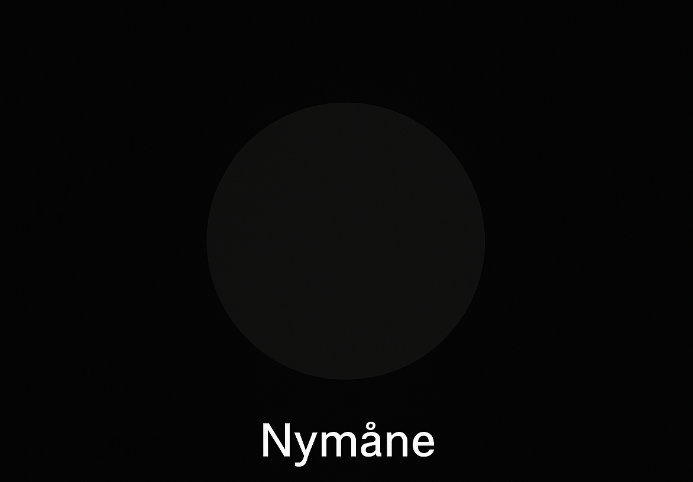

Nymåne
—
Hur detta fungerar
Tryck på pilarna för att bläddra mellan fyra månfaser. Datumet ska beräknas i JavaScript och visas under fasnamnet. (I detta exempel visas kommande datum ungefär var 7:e dag för att visa en knapp funktion.)